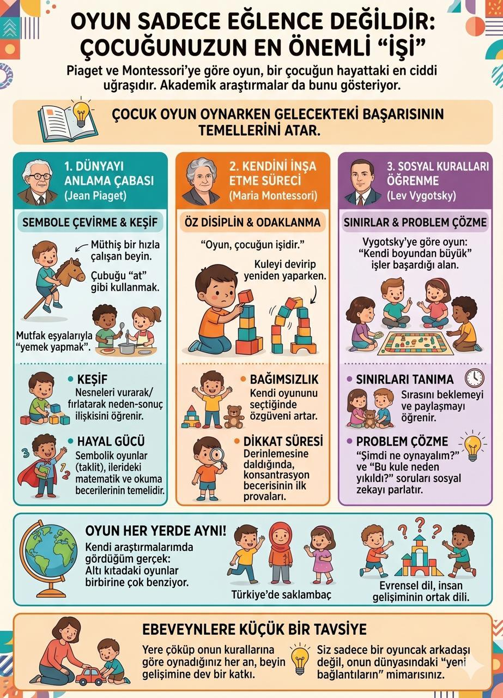

Oyun

Kısa yanıt: Oyun; çocuğun gönüllü olarak katıldığı, süreçten haz aldığı, merak ettiği, denediği ve çevresiyle etkileşim kurduğu temel bir öğrenme ve gelişim alanıdır. Çocuk oyun sırasında hareket eder, semboller kullanır, neden-sonuç ilişkileri kurar, dili dener, rolleri canlandırır, kuralları müzakere eder ve duygularını düzenlemeye çalışır. Bu nedenle oyun yalnız boş zaman etkinliği değil; çocukluk döneminin temel yaşantılarından ve Birleşmiş Milletler Çocuk Haklarına Dair Sözleşme’nin 31. maddesiyle tanınmış bir çocuk hakkıdır.
Oyunun değeri yalnızca çocuğa gelecekte kazandırabilecekleriyle ölçülmemelidir. Çocuk oyun oynarken sadece yetişkinliğe hazırlanmaz; o anda merak eder, ilişki kurar, haz alır, seçim yapar ve çocukluğunu yaşar.
Oyun nedir?
Her eğlenceli etkinlik oyun, her oyun da mutlaka bir oyuncakla yapılan etkinlik değildir. Oyunun tek ve evrensel bir tanımı bulunmasa da gelişimsel açıdan oyun çoğunlukla şu özelliklerle tanınır:
- Çocuk isteyerek katılır.
- Süreç, sonuçtan daha önemlidir.
- Merak, keşif ve tekrar içerir.
- Çocuk seçim yapabilir ve belirli ölçüde kontrol sahibidir.
- Gerçek yaşamın rolleri, nesneleri veya kuralları dönüştürülebilir.
- Oyun bazen neşeli, bazen yoğun ve ciddi görünebilir.
Bir çocuk kaşığı telefona dönüştürdüğünde sembolik oyun; minderlerden yol yaptığında yapı-inşa oyunu; “don–çöz” oynarken hareket ve kural oyunu kurar. Bunların her biri farklı gelişimsel becerilerin kullanılmasına fırsat verir.
Oyun çocuk gelişimini nasıl destekler?
Amerikan Pediatri Akademisinin 2025 yılında yeniden onaylanan klinik raporu, oyunu çocukların bilişsel, dilsel, sosyal-duygusal ve öz düzenleme becerilerini destekleyen önemli bir gelişim bağlamı olarak ele almaktadır. Bununla birlikte bilimsel açıdan “şu oyun çocuğun zekâsını kesin artırır” gibi iddialarda bulunmak doğru değildir. Oyunun etkisi; niteliğine, çocuğun yaşına ve özelliklerine, yetişkin ve akran etkileşimine, tekrar sıklığına ve içinde gerçekleştiği çevreye göre değişebilir.
1. Bilişsel gelişim ve problem çözme
Çocuk bloklardan köprü kurarken dengeyi, büyüklüğü ve mekânsal ilişkileri deneyimler. Kule yıkıldığında farklı bir çözüm dener; tahmin eder, gözlemler ve planını değiştirir. Yapboz, eşleme, inşa, saklama-bulma ve kurallı oyunlar çalışma belleği, dikkat, bilişsel esneklik ve ketleyici kontrol gibi yürütücü işlevlerin kullanılmasına alan açabilir.
Harvard Üniversitesi Çocuk Gelişimi Merkezi, oyun ve eğlenceli etkinliklerin çocuklara dikkati odaklama, bilgiyi akılda tutma ve temel öz denetimi kullanma fırsatı verdiğini vurgulamaktadır. Burada önemli nokta, oyunun çocuğun düzeyine uygun bir güçlük taşımasıdır: Ne hemen vazgeçeceği kadar zor ne de merakını kaybedeceği kadar kolay.
2. Dil ve iletişim gelişimi
Oyun; sözcüklerin yalnız ezberlendiği değil, gerçek iletişim amacıyla kullanıldığı bir ortamdır. Çocuk “Sen doktor ol, ben hasta olayım” derken rol dağıtır; hikâye kurar, açıklama yapar, soru sorar ve karşısındakinin söylediklerine yanıt verir.
Yetişkin oyuna duyarlı biçimde katıldığında çocuğun kullandığı sözcükleri genişletebilir: Çocuk “Araba gitti” dediğinde “Evet, kırmızı araba köprünün altından hızla geçti” demek gibi. Bu yaklaşım sınav yapmadan dil modeli sunar.
3. Sosyal-duygusal gelişim
Akran oyununda çocuk sırasını bekleme, fikir önerme, reddedilme ile baş etme, oyunun kuralını değiştirme ve anlaşmazlık çözme fırsatları bulur. Bu beceriler her oyunda kendiliğinden ve kusursuz biçimde ortaya çıkmaz. Özellikle küçük çocukların paylaşma, sıra alma ve çatışma çözme sırasında yetişkin desteğine ihtiyacı olabilir.
“Üzülme, bu sadece oyun” demek yerine “İkiniz de aynı kamyonu istiyorsunuz. Sırayı nasıl belirleyebiliriz?” şeklinde rehberlik etmek, çocuğun sorunu düşünmesine yardımcı olur.
4. Duygu düzenleme
Oyun, çocuğun heyecan, hayal kırıklığı, bekleme, kazanma ve kaybetme gibi duygularla güvenli bir bağlamda karşılaşmasına fırsat verebilir. “Kırmızı Işık–Yeşil Işık”, müzik durunca donma ve sırayla oynanan masa oyunları gibi etkinliklerde çocuk dürtüsünü durdurmayı ve kuralı akılda tutmayı dener.
Sembolik oyunda ise korkutucu veya kafa karıştırıcı bir yaşantıyı tekrar canlandırabilir. Ancak her tekrarlanan tema travmanın kanıtı değildir ve oyun tek başına tanı aracı olarak yorumlanmamalıdır.
5. Fiziksel ve motor gelişim
Koşma, tırmanma, atlama ve top oyunları denge, koordinasyon ve büyük kas becerilerini; hamur, mandal, boncuk, blok ve çizim oyunları küçük kas kullanımını destekler. Riskin bütünüyle kaldırıldığı ortamlar keşfi sınırlayabilir; amaç tehlikeyi önlemek, gelişimsel olarak yönetilebilir riske güvenli alan açmaktır.
6. Yaratıcılık ve esnek düşünme
Açık uçlu materyaller tek bir doğru kullanım biçimi sunmaz. Bir karton kutu araba, ev, roket veya dükkân olabilir. Çocuk böylece yeni fikir üretir, nesnelere farklı işlevler verir ve oyun planını değişen koşullara göre yeniden kurar.
Piaget, Vygotsky ve Montessori oyunu nasıl açıklar?
Piaget: Oyun ve bilişsel yapı
Piaget’nin yaklaşımında çocuk bilgiyi çevresiyle aktif etkileşim içinde yapılandırır. Alıştırma oyunları hareket ve davranışların tekrarına; sembolik oyun bir nesneyi veya durumu başka bir şeymiş gibi kullanmaya; kurallı oyunlar ise ortak kuralları anlamaya ve sürdürmeye dayanır.
Çocuğun bir bloğu telefon gibi kullanması, gerçek dünyadaki bir temsilin zihinsel olarak dönüştürülebildiğini gösterir. Ancak tek bir oyun davranışından çocuğun bütün bilişsel gelişimi hakkında kesin sonuç çıkarılamaz.
Vygotsky: Sosyal etkileşim ve öz düzenleme
Vygotsky, özellikle hayalî oyunda çocuğun bir rolün kurallarına göre davranmasının önemini vurgular. “Doktor” olan çocuk yalnız önlük giymez; doktor rolüne uygun konuşmayı ve davranmayı sürdürmeye çalışır. Böylece istediği her şeyi anında yapmak yerine oyunun ortak anlamına göre hareket eder.
Yetişkin veya daha yetkin akran, çocuğun tek başına yapamadığı fakat destekle yapabildiği noktada ipucu ve model sunabilir. Destek, çocuk beceri kazandıkça azaltılmalıdır.
Montessori: Amaçlı etkinlik, bağımsızlık ve çevre
Montessori yaklaşımı çocukların seçebildiği, gerçek yaşamla bağlantılı, ellerini kullanabildiği ve bağımsız tekrar yapabildiği etkinliklere önem verir. Montessori kaynaklarına atfedilen “oyun çocuğun işidir” ifadesi yaygın olsa da bunu kesin ve bağlamsız bir doğrudan alıntı gibi kullanmak yerine yaklaşımın temel ilkelerini açıklamak daha güvenlidir.
Montessori etkinlikleri ile serbest hayalî oyun aynı şey değildir. Her ikisi de çocuğa seçim, yoğunlaşma ve etkin katılım fırsatı sunabilir; ancak amaçları ve materyal kullanımları farklıdır.
Serbest oyun, rehberli oyun ve yapılandırılmış oyun arasındaki fark nedir?
| Oyun biçimi | Kontrol kimde? | Örnek | Yetişkinin rolü |
|---|---|---|---|
| Serbest oyun | Oyunun yönünü ağırlıklı olarak çocuk belirler. | Kutulardan uzay gemisi yapmak | Güvenli ortam ve zaman sunmak; gereksiz müdahaleden kaçınmak |
| Rehberli oyun | Çocuk etkin biçimde seçim yapar; yetişkin belirli bir öğrenme hedefi için çevre veya soru sunar. | Bloklarla farklı uzunlukta yollar kurmak | İpucu vermek, merak uyandırmak, çözümü söylememek |
| Yapılandırılmış oyun | Kural ve sıra önceden daha belirgindir. | Hafıza kartı, seksek, kutu oyunu | Kuralları anlaşılır kılmak ve gerektiğinde uyarlamak |
Çocuğun gelişimi için tek bir oyun biçimi yeterli değildir. Serbest oyun özerklik ve yaratıcılığa; rehberli oyun keşif içinde öğrenmeye; kurallı oyun ise sıra, kural ve strateji kullanımına farklı fırsatlar sunar.
Yaşa göre oyun gelişimi ve örnekler
| Yaş dönemi | Sık görülen oyun özellikleri | Uygun örnekler |
|---|---|---|
| 0–12 ay | Duyusal keşif, beden hareketleri, tekrar ve karşılıklı sosyal oyun | Ce-ee, yüz taklidi, güvenli nesnelere uzanma, saklanan oyuncağı arama |
| 1–2 yaş | İşlevsel oyun, doldurma-boşaltma, itme-çekme, yetişkini taklit | Kap-kutu oyunları, büyük bloklar, oyuncak bebeği besleme, top yuvarlama |
| 2–3 yaş | Basit sembolik oyun, yan yana oyun, kısa oyun dizileri | Mutfak oyunu, oyuncak hayvanlar, hamur, su-kum oyunu |
| 3–5 yaş | Gelişen hayalî oyun, rol paylaşımı, basit kurallar | Market, doktorculuk, kukla, inşa, müzik durunca donma |
| 5–7 yaş | Daha uzun hikâyeler, iş birliği ve kurallı oyunlara artan ilgi | Hazine avı, seksek, basit kutu oyunları, takım inşa görevleri |
| 8–12 yaş | Strateji, beceri geliştirme, akran aidiyeti ve karmaşık kurallar | Strateji oyunları, spor, drama, tasarım-inşa, doğa keşfi, yaratıcı dijital üretim |
Yaş aralıkları yaklaşık gelişimsel örüntülerdir. Çocuğun ilgi alanı, kültürü, deneyimi, dili ve gelişimsel özellikleri oyunun biçimini etkiler.
Ebeveyn çocuğun oyununa nasıl katılmalı?
1. Önce gözlemleyin
Oyuna girer girmez soru yağdırmak yerine çocuğun ne kurduğunu, hangi rolü üstlendiğini ve sizden ne beklediğini izleyin.
2. Çocuğun liderliğini takip edin
“Arabayı buraya koy” demek yerine “Ben hangi arabayı kullanayım?” diye sorun. Çocuk yardım istemedikçe oyunun problemini hemen çözmeyin.
3. Davranışı betimleyin
Sınav soruları yerine gördüğünüzü dile getirin: “Uzun blokları alta koydun; kule şimdi daha dengeli duruyor.” Bu dil hem dikkat hem kavram gelişimi için model oluşturur.
4. Az ve açık uçlu soru sorun
“Bu ne renk?” gibi cevabı bilinen çok sayıda soru oyunun akışını kesebilir. “Sence köprüyü nasıl güçlendirebiliriz?” veya “Hikâyede sonra ne olabilir?” gibi soruları ölçülü kullanın.
5. Duyguyu ve çabayı fark edin
“Kule yıkılınca kızdın ama farklı bir taban denedin” ifadesi, hem duyguyu hem stratejiyi görünür kılar. Her ürünü “mükemmel” diye övmek gerekmez.
6. Oyundan ne zaman çekileceğinizi bilin
Çocuk oyunu bağımsız sürdürebiliyorsa sürekli öğretmeye çalışmayın. Yetişkinin rolü oyunu ele geçirmek değil, gerektiğinde ilişki ve destek sunmaktır.
Evde oyun ortamı nasıl hazırlanır?
Pahalı ve çok sayıda oyuncak gerekli değildir. İyi bir oyun ortamı güvenli, erişilebilir, çocuğun seçim yapabileceği ve materyali dönüştürebileceği bir alan sunar.
Kullanılabilecek açık uçlu materyaller:
- Karton kutular, kâğıt rulolar ve kumaş parçaları
- Farklı boylarda bloklar
- Hamur, kâğıt, boya ve bant
- Kukla veya basit figürler
- Yaşa ve güvenliğe uygun doğal materyaller
- Top, ip, minder ve tebeşir
- Günlük yaşamdan güvenli kaplar, kaşıklar ve mandallar
Materyalleri aynı anda yığmak yerine bir bölümünü dönüşümlü sunmak dikkati kolaylaştırabilir. Küçük parçalar boğulma riski nedeniyle çocuğun yaşı ve gelişim düzeyine göre seçilmelidir.
Çocuğum tek başına oynamıyor: Ne yapabilirim?
Bağımsız oyun doğuştan eksiksiz gelen bir beceri değildir. Bazı çocuklar yetişkin yakınlığına, oyuna başlamak için modele veya daha sade bir ortama ihtiyaç duyar.
Şu basamakları deneyin:
- Birlikte kısa bir oyun başlatın.
- Çocuğun ilgilendiği materyali seçin.
- Tek bir fikir veya başlangıç modeli sunun.
- “Ben burada kitabımı okurken sen garajı tamamlayabilirsin” diyerek yakın kalın.
- Önce birkaç dakikalık bağımsız süre hedefleyin.
- Süreyi çocuğun başarısına göre yavaşça artırın.
Çocuk oyuna hiç başlamıyor, oyunları çok sınırlı ve tekrarlayıcı kalıyor veya yaşına göre beklenen sembolik ve sosyal oyun becerilerinde belirgin güçlük gösteriyorsa gelişimsel değerlendirme yararlı olabilir.
Oyunda sık yapılan ebeveyn hataları
- Oyunu sürekli öğretim ve soru-cevap etkinliğine çevirmek
- Çocuğun yerine karar vermek ve problemi hemen çözmek
- Yalnız pahalı veya “eğitsel” etiketli oyuncakların geliştirici olduğunu düşünmek
- Dağınıklığa hiç tolerans göstermemek
- Her anlaşmazlıkta çocuklar adına çözüm üretmek
- Çocuğu yaşıtı veya kardeşiyle kıyaslamak
- Dijital oyunu bütünüyle değersiz, fiziksel oyunu otomatik olarak yararlı saymak
- Oyundaki tek bir temayı psikolojik sorun kanıtı gibi yorumlamak
- Oyunu yalnız akademik kazanç sağladığı ölçüde değerli görmek
Dijital oyun da oyun mudur?
Dijital etkinlikler problem çözme, yaratıcılık, iş birliği veya sosyal iletişim içerebilir. Ancak her dijital içerik oyun niteliği taşımaz ve bütün dijital oyunlar gelişimsel olarak eş değer değildir. İçeriğin yaşa uygunluğu, reklam ve satın alma tasarımı, çevrim içi temas, kullanım süresi, yetişkin eşliği ve ekranın uyku, hareket, yüz yüze oyun gibi deneyimlerin yerini alıp almadığı birlikte değerlendirilmelidir.
Dijital oyunu tek başına “iyi” veya “kötü” diye sınıflandırmak yerine çocuğun ne yaptığına ve kullanım sonrasında günlük işlevlerinin nasıl etkilendiğine bakılmalıdır.
Ne zaman uzman desteği düşünülmeli?
Aşağıdaki durumlar uzun süreli, belirgin ve günlük yaşamı etkileyen bir örüntü gösteriyorsa çocuk gelişimi uzmanı veya ilgili sağlık uzmanından görüş alınabilir:
- Yaşa göre oyun çeşitliliğinin çok sınırlı olması
- Nesneleri işlevine uygun veya sembolik biçimde kullanmada belirgin güçlük
- Oyuna başlama ve sürdürmede yoğun zorlanma
- Akran oyununa katılmada kalıcı güçlük
- İsme tepki, ortak dikkat, dil, hareket veya öz bakım alanlarında eşlik eden gelişimsel kaygılar
- Oyun sırasında kendine ya da başkasına zarar verme riskinin sıklaşması
- Önceden kazanılmış oyun veya iletişim becerilerinin kaybı
Tek bir belirti tanı koydurmaz. Değerlendirmede çocuğun oyun becerileri diğer gelişim alanları, aile gözlemleri ve farklı ortamlardaki davranışlarıyla birlikte ele alınmalıdır.
Sonuç
Oyun çocuk için yalnızca eğlenceli bir mola değildir; dünyayı araştırdığı, ilişkileri denediği, bedenini kullandığı ve kendi fikirlerini kurduğu temel bir yaşam alanıdır. Fakat oyunu değerli kılmak için her anını akademik hedefe dönüştürmek gerekmez. Çocuğun güvenli bir ortamda seçim yapabildiği, merakını sürdürebildiği ve gerektiğinde duyarlı yetişkin desteği alabildiği oyun, gelişimin doğal bağlamlarından biridir.
Bugün çocuğunuza yeni bir oyuncak almak yerine 15 dakikalık kesintisiz bir oyun alanı açmayı deneyin. İlk birkaç dakika yalnız gözlemleyin; ardından onun verdiği role ve kurduğu dünyaya katılın.
Sık sorulan sorular
Çocuk günde kaç saat oyun oynamalıdır?
Bütün çocuklar için geçerli tek bir oyun süresi yoktur. Gün içinde serbest oyun, hareket, açık hava, sosyal etkileşim ve dinlenmeye düzenli yer verilmesi önemlidir. Çocuğun yaşı, günlük programı ve gereksinimleri dikkate alınmalıdır.
Ebeveyn her gün çocukla oyun oynamalı mı?
Kısa fakat dikkat bölünmeden geçirilen düzenli oyun zamanları ilişkiyi destekleyebilir. Ebeveynin çocuğun bütün oyunlarını yönetmesi gerekmez; çocuk hem yetişkinle hem akranla hem de bağımsız oyun deneyimine ihtiyaç duyar.
En geliştirici oyuncak hangisidir?
Tek bir “en geliştirici” oyuncak yoktur. Çocuğun yaşına ve ilgisine uygun, farklı biçimlerde kullanılabilen, güvenli ve aktif katılım gerektiren materyaller genellikle daha zengin oyun fırsatı sunar.
Çocuğum aynı oyunu tekrar tekrar oynuyor; normal mi?
Tekrar, çocukların beceri geliştirmesi ve deneyimi anlamlandırması için doğal olabilir. Oyun zamanla küçük değişiklikler kazanıyorsa ve çocuk başka etkinliklere de katılabiliyorsa genellikle kaygı nedeni değildir. Yoğun katılık, belirgin sıkıntı veya gelişimin başka alanlarında güçlük eşlik ediyorsa değerlendirme düşünülebilir.
Çocuğun oyununa müdahale edilmeli mi?
Güvenlik riski, zarar verme veya çocuğun çözemediği yoğun çatışma yoksa yetişkin önce gözlemlemelidir. Gerektiğinde çözümü vermek yerine kısa ipucu, duygu yansıtma veya seçenek sunma kullanılabilir.
Oyuncak olmadan oyun oynanabilir mi?
Evet. Şarkı, taklit, saklambaç, hikâye kurma, gölge oyunu, beden hareketleri ve doğa keşfi oyuncaksız oyun örnekleridir. Çocuğun hayal gücü ve sosyal etkileşim çoğu zaman temel kaynaktır.
Kaynaklar
- Yogman, M., Garner, A., Hutchinson, J., Hirsh-Pasek, K., & Golinkoff, R. M. (2018). *The Power of Play: A Pediatric Role in Enhancing Development in Young Children*. Pediatrics, 142(3), e20182058. Rapor Ocak 2025'te yeniden onaylanmıştır. https://doi.org/10.1542/peds.2018-2058
- Ginsburg, K. R. (2007). *The Importance of Play in Promoting Healthy Child Development and Maintaining Strong Parent-Child Bonds*. Pediatrics, 119(1), 182–191. https://doi.org/10.1542/peds.2006-2697
- Center on the Developing Child at Harvard University. *Brain-Building Through Play: Activities for Infants, Toddlers, and Children*.
- Gibb, R., Coelho, L., Van Rootselaar, N. A., et al. (2021). *Promoting Executive Function Skills in Preschoolers Using a Play-Based Program*. Frontiers in Psychology, 12, 720225. https://doi.org/10.3389/fpsyg.2021.720225
- United Nations. (1989). *Convention on the Rights of the Child*, Article 31.
- Piaget, J. (1962). *Play, Dreams and Imitation in Childhood*. Norton.
- Vygotsky, L. S. (1967). *Play and Its Role in the Mental Development of the Child*. Soviet Psychology, 5(3), 6–18.
---